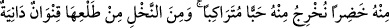

sudan içti ve kalanını da Şah’a verdi.
Şerbeti içen Şah bundan daha tatlı, soğuk, lezzetli bir şey içmediğini söyledi. Daha
sonra ihtiyar kadın ortalıktan kayboldu. Genç:
– Bu ihtiyar kadın dünyadır. Allah onu bana hizmetçi kılmıştır. Bir şeye ihtiyaç
duysam, daha aklıma gelir gelmez onu bana getirir. Allah Teâlâ’nın dünyayı yarattığında
ona:
– “Ey dünya Bana hizmet edene sen de hizmet et, sana hizmet edeni ise kendi
hizmetinde kullan.”[144] buyurduğunu duymadın mı?
Bunları gören Şah tevbe etti. Daha önce yaptıklarını terk etti. Sonra da onun hakkında
olanlar oldu.
Bir şair şöyle demiştir:
Senin hizmetinde olduğumda, hizmet gördüm,
Senin nimetlerinden, sevinç etrafımda döndü.
Olaylar gelip kapımı çaldı,
Ama ben senin maiyetinde olduğum için, benden çekindiler.
Allah’ım, bizi kapından ayırma, kendinden uzaklaştırma!
99. O, gökten su indirendir, İşte biz her çeşit bitkiyi onunla bitirdik. O bitkiden de
kendisinde üstüste binmiş taneler bitireceğimiz bir yeşillik; hurmanın
tomurcuğundan sarkan salkımlar; üzüm bağları; bir kısmı birbirine benzeyen, bir
kısmı da benzemeyen zeytin ve nar bahçeleri meydana getirdik. Meyve verirken
ve olgunlaştığı zaman her birinin meyvesine bakın! Kuşkusuz bütün bunlarda
inanan bir toplum için ibretler vardır.
“Gökten” özel bir “suyu”, yağmuru “indiren O’dur.” Allah Teâlâ’dır.
Burada üçüncü şahıs zamirinden birinci şahıs kipine dönerek şöyle buyurmaktadır:
“Biz” azametimizle “onunla” o tek su sâyesinde arpa, buğday, nar, elma ve diğer
bitkiler gibi “her çeşit bitkiyi çıkardık.”
“Biz” kelimesi, çokluk ifade etmez, azamet içindir. Çünkü, büyük bir padişah kendini
yüceltmek için kendinden “biz” diye bahseder.
Çeşit diye tercüme edilen “şey” kelimesi tahsis edilmiştir. Bu yüzden her şeyin